RackTrack · live on demo and portal · 17 September 2026
Phase 0.5 of the plan against the manager's specification: the code now keeps the six rules we froze on 11 September, on the server and in every screen. This page shows what changed and how it looks. The rest of the specification waits for the discussion with the manager.
The server refuses an approve or reject on any item whose ticket is not resolved. The portal hid the buttons; the phone app did not; the API never checked. Now all three agree.
Refused with "assign first" in the response and beside the item on screen.
When NetBox refuses any object, the plan becomes "write failed" instead of "applied". The failed objects are named, the admin who ran it gets an email, and "Try the write again" retries under the same fingerprint check.
Before: the plan showed as applied and nobody was told.
Submit, assign, ticket raised, resolve, decide and write each write a row to the audit table with who, when and what.
Before: none of them did; the only history was inside the plan file.
A member can adopt a scan, compare it with NetBox, read their own plans and contacts, and send to the admin. Decide, write, resolve and the ticket list answer 403.
Before: every drift route needed a site manager, so a technician could not run the check at all.
The plan list takes mine=1 and forces it for members; My checks shows the caller's own work.
Before: it listed the whole organization.
GET /api/nb/plans/tickets/all is admin-only on the server, not only hidden in the portal menu.
The ticket stores the NetBox contact id and email beside the name. A name matching no contact, or more than one, is refused.
Before: two people with the same name would collide.
"Assign the whole rack" raises one incident per pending item. "Ports follow this device" shows the real ports under their device and hides when there are none.
Before: both were drawn but the server ignored them.
Driven headless against a stub of the server contract, at laptop width. The values are test data; the behaviour is the built code.
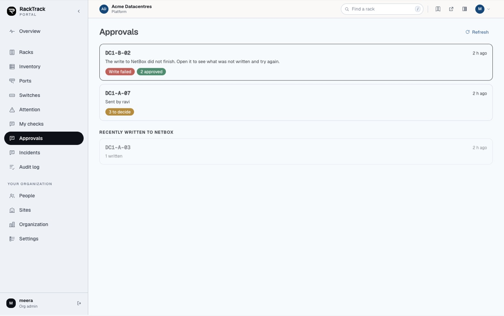
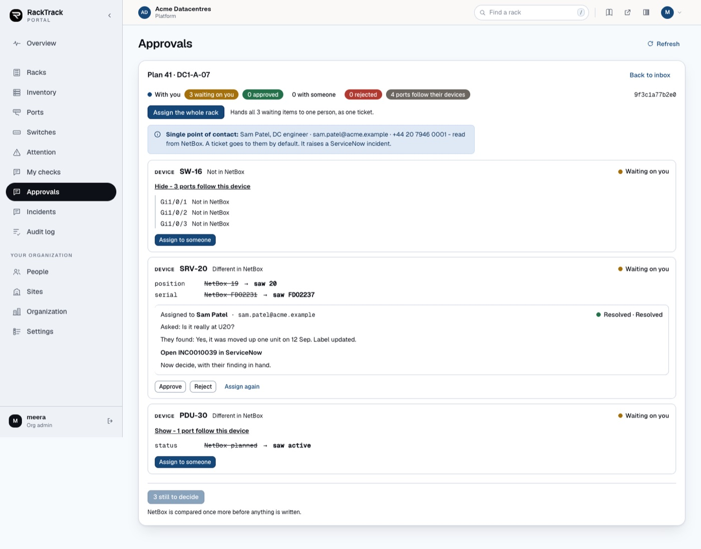
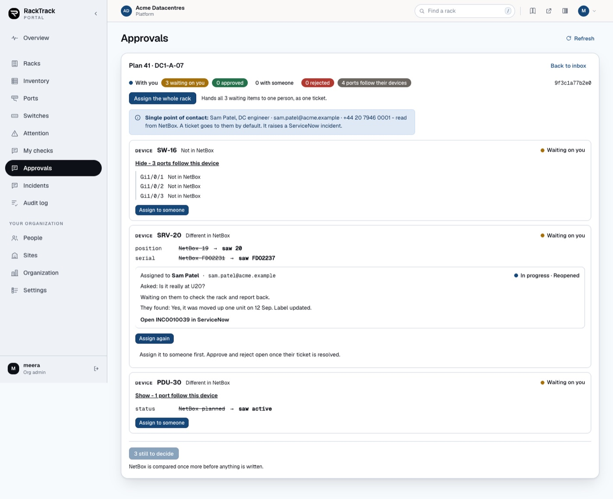
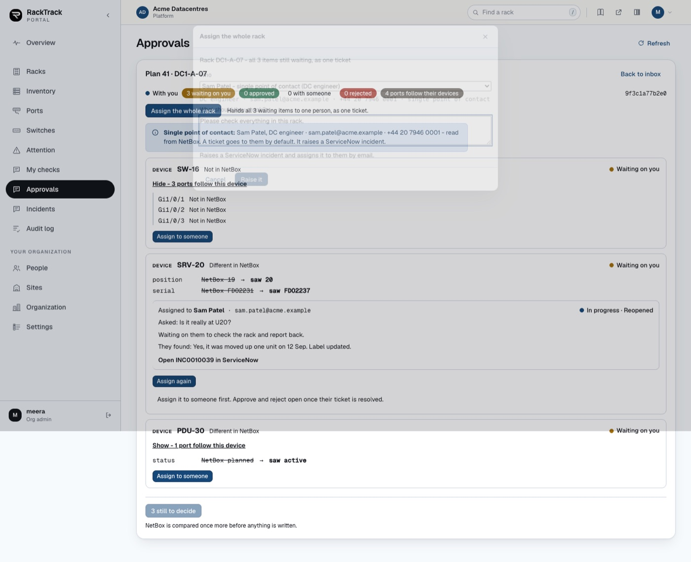
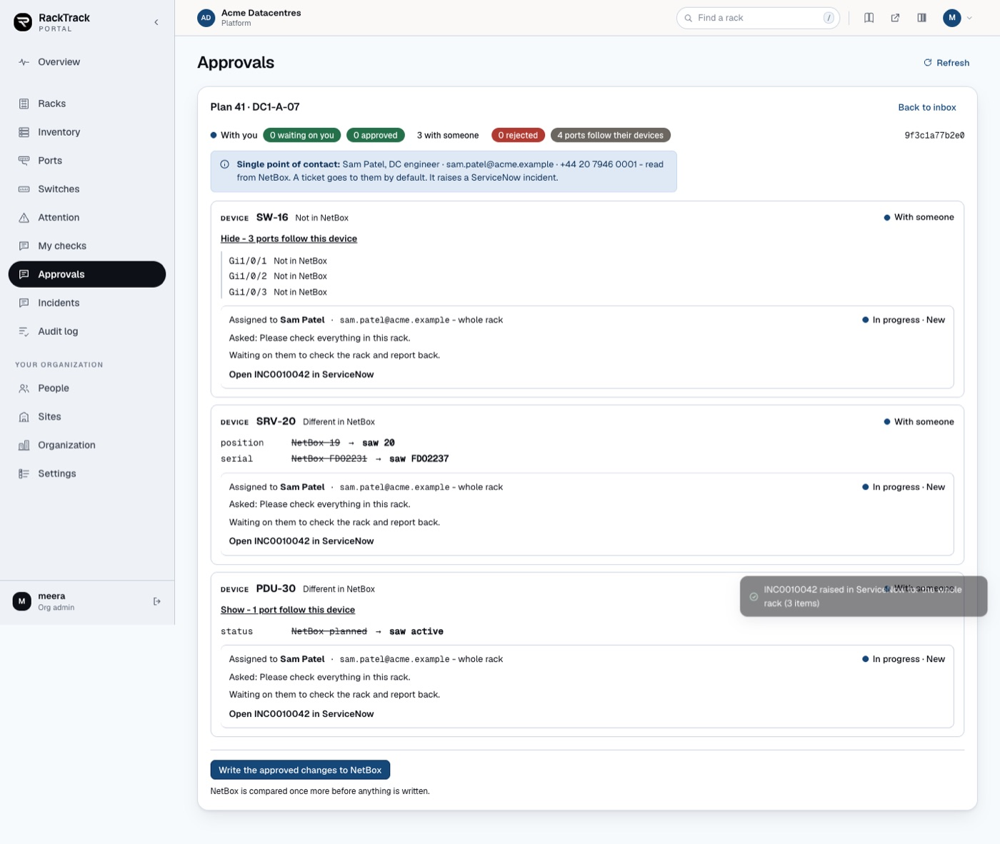
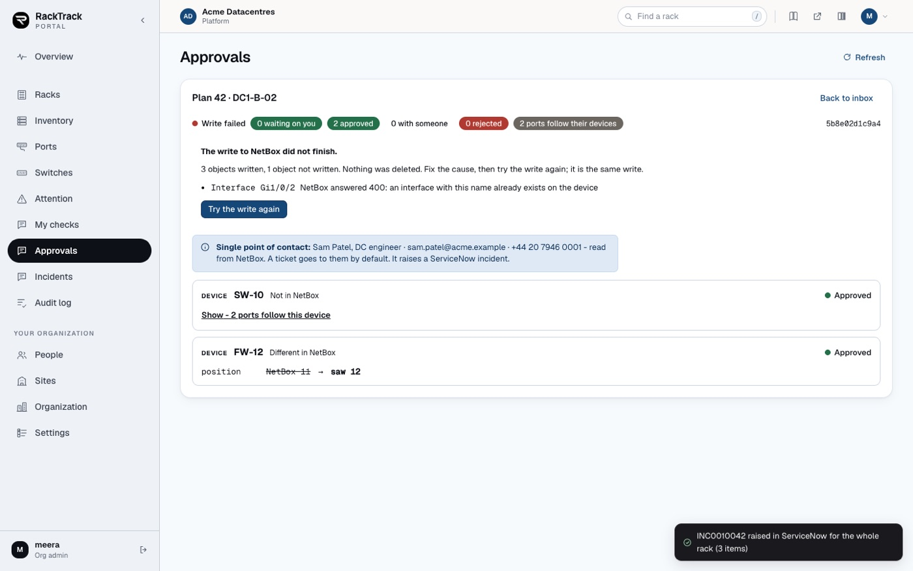
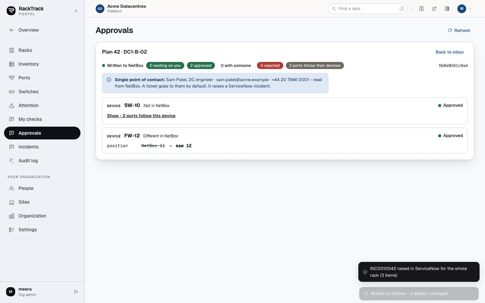
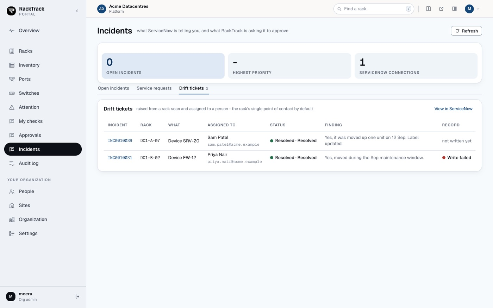
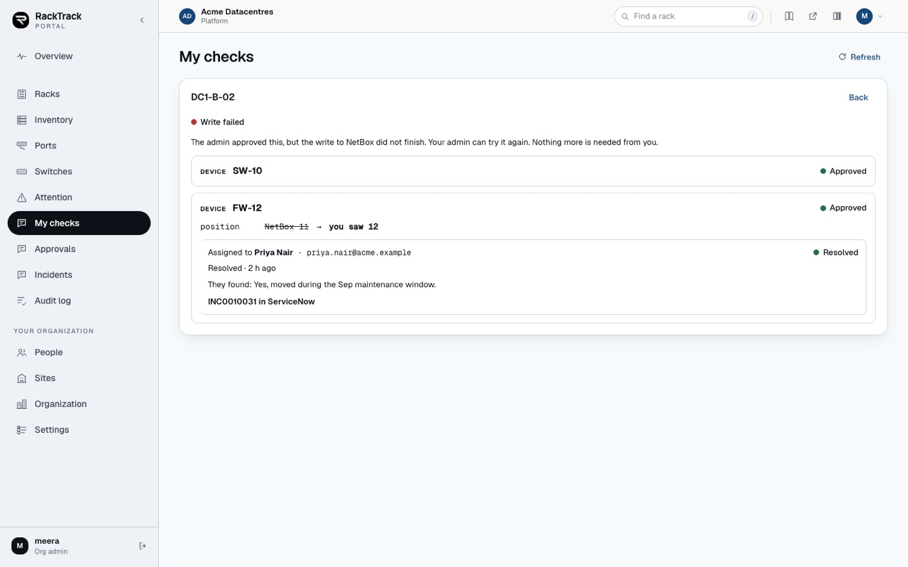
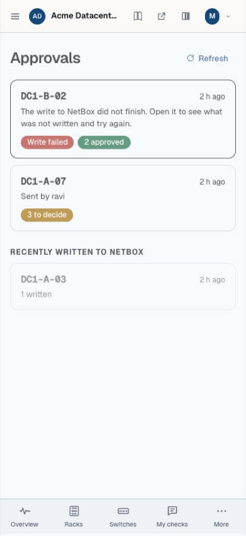
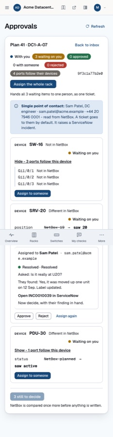
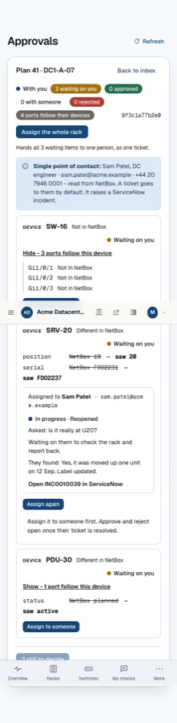
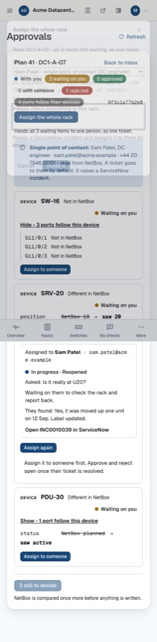
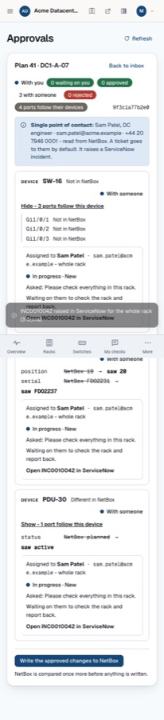
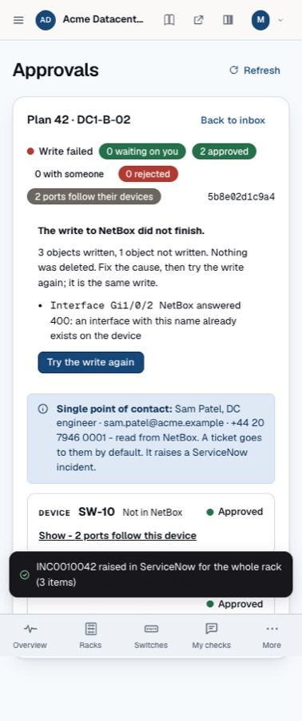
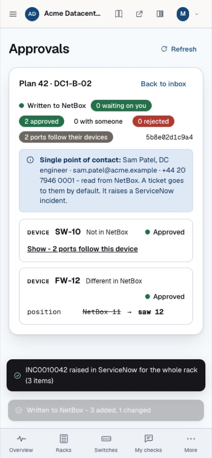
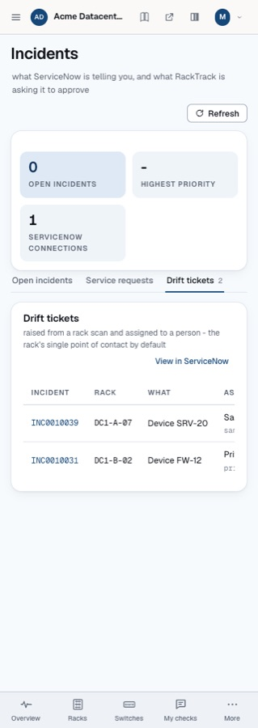
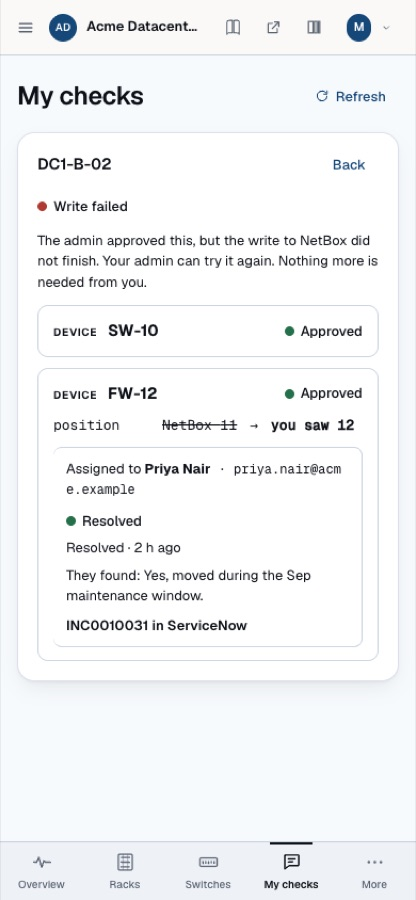
| Check | Result | |
|---|---|---|
| Server suite | 285 tests, 259 pass, 0 fail, 26 skipped. New rules test boots the app and checks each rule over HTTP, including a member getting 200 on the six allowed routes and 403 on decide, export and the ticket list. | pass |
| Phone app | 145 tests pass, 1 skipped; nine new tests on the approvals page, the inbox and the technician's drift page; build clean. | pass |
| Portal | Lint 0 errors, build clean, driven at 1440 px and 390 px with no console or page errors. | pass |
| Live, owner | demo.racktrack.ai: the plan list with mine=1, the ticket list and the write failed filter answer 200. | pass |
| Live, technician | A new member meridian.tech in Hyderabad DC1: the plan list answers 200 with only their own plans; the ticket list, decide and export answer 403 with a plain message; adopt is allowed. | pass |
From the plan: moving plans from files into tables, the full status model and reason codes, the verification re-scan before approval, the approval bound to the payload with snapshots, SLA clocks and escalation, notifications beyond the two emails we send now, exceptions and duplicates, dashboards and reports, and the new roles. The plan and the decisions are at the link in the ticket.
Nothing is committed yet; say the word. To try it: sign in on portal.racktrack.ai as an admin and press Approve on an unassigned item, or sign in on demo.racktrack.ai as meridian.tech to see what a technician can and cannot do.